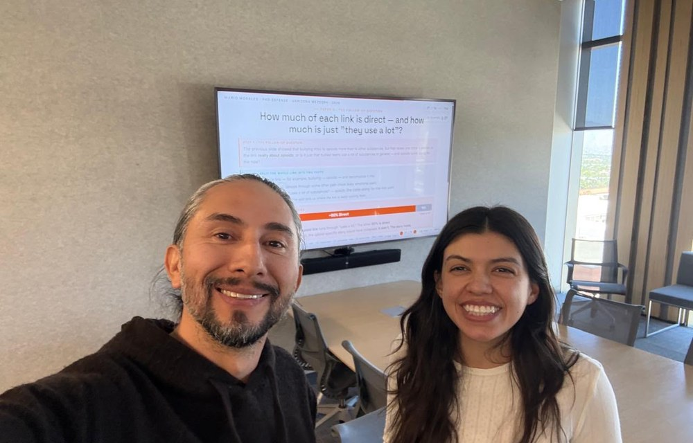

Weekly meeting · 13 August 2026
THRIVE-Belize
Transformative Health Resources and Interventions for Vital Empowerment
A life-skills curriculum for Toledo Community College, and a formal test of whether this community wants it.
Mario Morales, PhD · Aimee Slagle, MPH, MA · University of Arizona
These slides stay online at yeridu.github.io/THRIVE-Belize-RotaryClub
- Site
- Toledo Community College, Punta Gorda
- People
- Five stakeholder groups — students, parents and guardians, teachers, the principal and school support staff, and key local informants. Surveys, focus groups and interviews.
- Approvals
-
- University of Arizona IRBSTUDY00007955
- Belize Ministry of Health and Wellness IRBMOHW/IRB/2026/002
- Belize Ministry of Education, Culture, Science and TechnologyGEN/21/26(112) Vol. III
- Registered
- ClinicalTrials.gov NCT07687199, 3 July 2026
Four phases. We are in the second.
The connection between Rotary and THRIVE
To help Rotary members "advance world understanding, goodwill, and peace by improving health, providing quality education, improving the environment, and alleviating poverty."
You furnished the dormitory at Hillside Health Care, with the Rotary Club of Columbus, Indiana. You built the wastewater garden at the hospital.
You pay high school scholarships. You gave dictionaries, and you ran school feeding programmes.
You built water systems and solar latrines in villages across the district.
THRIVE-Belize works toward the same objective: health and education for young people, in the poorest district of Belize.
Mission as published by The Rotary Foundation. Club projects from the club's own weblog, pgrotary.wordpress.com. Every link is on the sources slide.
We asked every student. 497 answered. Each answer became a module.
Across the English-speaking Caribbean, 23.5% of adolescents show symptoms of any mental-health problem. At TCC, 26.6% had already attempted suicide.
THRIVE-Belize needs assessment, Toledo Community College, May 2025. All students in Forms 1-3 invited, 86.5% took part, 497 analysed. Comparison figure: Liverpool et al., Discover Mental Health, 2023, pooled across 28 studies and 65,034 adolescents in 14 countries.
Four things the numbers alone do not show.
The typical student reported 9 of the 27 risks and needs we measured. 14% reported 14 or more — three times what chance predicts.
So a lesson on one topic at a time misses how these pile up in the same young life.
50% doing comparatively well · 26% emotional pain alongside hardship at school · 24% risky behaviour in heavy surroundings.
These are planning categories, to aim support. They are not labels for any child.
51% reported at least one sign of emotional distress. Of those students, 44% said help rarely or never came.
That gap is the part a school programme, working with health services, can actually close.
We fixed what to measure before looking at the curriculum, so the data was free to contradict us. It supported all seven modules — and named four we had missed: help-seeking, fair treatment at school, family engagement, and stigma.
THRIVE-Belize needs assessment, Toledo Community College, May 2025. Clustering and profiles from the paper's Results; the support gap from the priority cascade; the four additions from Table 3.
Ten elements. We answered every one.
We did not start by designing a curriculum. We started by finding the best evidence on what makes prevention work, and holding ourselves to it. Three minutes.
Video unavailable. Press the right arrow and carry on.
The ten elements are from Jewkes R, Willan S, Heise L, et al. Int J Environ Res Public Health 2021;18:12129. What we did about each one is ours.
Seven modules. Four of Rotary's causes.
- Healthy relationships and assertiveness43.6% bullied at school
- Masculinities and boys' health32.1% of boys blame the victim
- Emotions and communication26.6% attempted suicide
- Mental and physical health66.7% active under 5 days a week
- Substance use and refusal skills33.8% have vaped
- Sexual and reproductive health63.2% cannot find contraception
- Environmental healthNot measured in the 2025 survey
Water, sanitation and hygiene · Community economic development. Two of Rotary's seven causes that THRIVE does not touch at all. This club already does both.
Areas of focus and their scope: The Rotary Foundation, Areas of Focus Policy Statements, October 2020. Percentages: TCC survey, May 2025, shown in full on the earlier slide. The mapping is ours, not Rotary's, and we are happy to be argued with on any row. Two limits worth knowing: Rotary excludes general health education from disease prevention, and funds adolescent sexual and reproductive health only inside the health system under licensed supervision, which is why Hillside is a partner.
We are asking for feedback before we implement.
Phase 1 delivers no lessons to anyone. It exists to find out whether the people of this district find this curriculum acceptable, appropriate and workable — and what has to change before we would ever teach it.
Recruitment opened on 23 July 2026 and is still open. These are live counts, not final ones.
- Counts from the four Phase 1 workbooks, consolidated 12 August 2026
- Targets are the anticipated enrolment in the approved protocol
- Students join only with written parent consent and their own written assent
- Nobody is enrolled by default
We wrote down, in advance, what would make us stop.
3.5 and above
The average person agreed.
3.0 to 3.5
Between not sure and agree. We change the curriculum, then look again.
Below 3.0
The average person was not sure, or worse. We do not proceed.
We score three things separately: do you want it, does it fit here, can the school run it. We never add them together, so a good score cannot hide a bad one. The weakest of the three decides the colour.
Thresholds set and published before we collected a single answer. Also red: fewer than 40% of teachers willing, substantial community opposition, or safeguarding that is not adequate. Press Listen for the worked example.
THRIVE-Belize in five minutes
Video unavailable. Press the right arrow and carry on.
Masculinities and boys' health
Four sessions, in order: name it — what is inside the box we put boys in; feel it — what that rigidity costs them; connect it — how those norms lead to violence; act on it — what each student will do differently.
Video unavailable. The four sessions are described above.
Why this module is in the curriculum: at TCC in May 2025, boys were about three times more likely than girls to agree with statements that blame the victim of violence (32.1% against 11.7%). The module is written for boys and girls together.
Thank you for the time, and for the thought.
For your time. A club meeting is short, and you gave a good part of one.
For your questions. Phase 1 is when they can still change the design.
For considering the project, and whether it fits what Rotary funds.
We would be glad to keep talking, whenever it is useful.
THRIVE–Belize


Supported by an internal University of Arizona Graduate College ReaP grant. The authors declare no competing interests.
Thank you
- Hillside Health CareOur community health partner in Toledo District
- Belize Ministry of Health and WellnessInstitutional Review Board approval
- Belize Ministry of Education, Culture, Science and TechnologyAuthorisation to work in the school
- Global Health InstituteMel and Enid Zuckerman College of Public Health, University of Arizona

The full presentation, with every source, stays online. Scan the code or type the address — no login, nothing to install, and it works on a phone.
Questions, and we would like to hear the hard ones.
Mario Morales, PhD · Aimee Slagle, MPH, MA · University of Arizona
mariomorales@arizona.edu · yeridu.com
Where every claim in this talk comes from
- Rotary Club of Punta Gorda Town, Belize. Club weblog — charter date and the full project list quoted on slide 2, including dictionaries for students and solar latrines, which have no separate project page: pgrotary.wordpress.com/about. The Hillside dormitory furnishing was a matching grant with the Rotary Club of Columbus, Indiana, as the project page states. Individual projects: furniture for Hillside Clinic · scholarships to attend high school · Toledo school feeding program · village water project · PG hospital wastewater upgrade. Index of all club projects: pgrotary.wordpress.com/service-projects.
- The Rotary Foundation. Areas of Focus Policy Statements, October 2020 — the seven areas of focus, the scope quoted on the bridge slide, and the eligibility limits noted there.
- Liverpool S, Prescod J, Pereira B, Trotman C. Prevalence of mental health and behaviour problems among adolescents in the English-speaking Caribbean: systematic review and meta-analysis. Discover Mental Health. 2023;3(1):11. doi:10.1007/s44192-023-00037-2 — pooled prevalence 23.5% (95% CI 17.5 to 30.2) across 28 studies and 65,034 adolescents in 14 countries.
- Statistical Institute of Belize. Multidimensional Poverty Index, September 2021 — 35.7% of the population in multidimensionally poor households; Toledo the highest of any district; rural incidence about double urban.
- Kirsch J, Fabbri M, Kerr K, Bravo-Peterec S, Gomez L. Gender-Based Violence in Toledo, Belize: A Qualitative Study. Journal of Family Violence. 2024. doi:10.1007/s10896-024-00785-x — semi-structured interviews with health workers in Toledo District; three reported themes: influences on gender-based violence; control, power and patriarchy; and responses from women.
- Oladeji O, Nah E, Kirsch J, et al. Trends in suicide attempts and suicide mortality in Belize 2019-2023. International Journal of Community Medicine and Public Health. 2025;12(6):2492-2500. doi:10.18203/2394-6040.ijcmph20251686 — suicide rate 6.99 per 100,000 in 2019 rising to 11.38 in 2023; attempts most common at ages 15-19.
- Jewkes R, Willan S, Heise L, et al. Elements of the Design and Implementation of Interventions to Prevent Violence against Women and Girls Associated with Success. International Journal of Environmental Research and Public Health. 2021;18(22):12129. doi:10.3390/ijerph182212129 — the ten elements and their three groupings, restated in plain language.
- Morales M, Slagle A, Valdez G. Co-occurring adolescent health risks and life-skills needs at Toledo Community College, Punta Gorda, Belize: a school-based needs assessment. Manuscript in preparation — the Phase 0 survey, May 2025; all students in Forms 1-3 invited, 86.5% took part, 497 analysed. Every percentage attributed to TCC students in this talk comes from this source. Analysis code: github.com/yeridu/THRIVE-Belize-Needs-Assessment
- Morales M, Slagle A, Valdez G. THRIVE-Belize: a single-school, mixed-methods feasibility study — study protocol. Curriculum structure, target sample sizes, progression criteria, safeguarding procedures and approvals are taken from this protocol. ClinicalTrials.gov NCT07687199. University of Arizona IRB STUDY00007955; Belize MOHW IRB MOHW/IRB/2026/002; Belize MOECST GEN/21/26(112) Vol. III.
- THRIVE-Belize Phase 1 data-entry workbooks, 12 August 2026 — the enrolment counts on the Phase 1 slide.
- THRIVE-Belize protocol and manuscripts — the expansion of the name on slide 1, "Transformative Health Resources and Interventions for Vital Empowerment", appears verbatim in the BMJ Open protocol manuscript, the Belize MOHW IRB submission and the feasibility protocol.
- THRIVE-Belize Phase 1 survey instruments (Supplement A, Part A, forms A1-A6, version 5.0) and codebook — the 5-point scale, the six survey sections, and the four student acceptability statements quoted in the worked example.
- National Society for the Prevention of Cruelty to Children (NSPCC). The 4Rs of safeguarding — recognise, respond, report, record.